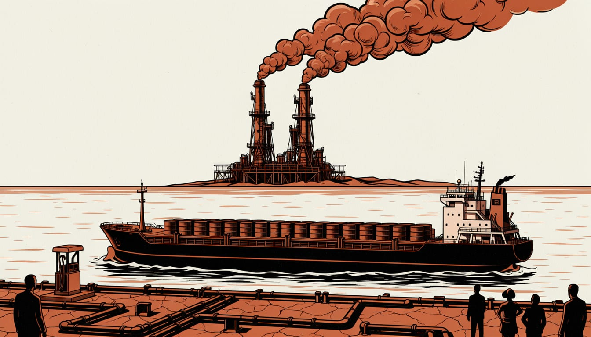

Ukraine's refinery strikes cost Russia at home while export cargoes kept moving
The strikes cut half of Russia's refining capacity and pushed fuel prices up inside the country. Crude exports held the line, so the cost has not landed on the ships leaving Russian ports.

A drone battalion commander with the call sign Tango serves in Ukraine's 1st Separate Center of Unmanned Systems. He told the Washington Post that Ukrainian forces target the most important parts of refineries, so they stop and do not recover.
By the end of August 2026, half of Russia's total refining capacity was offline, according to a Washington Post analysis of the damage. That is more than twice the amount forced offline in late 2025. The commander's aim, in his account, is to keep it that way: a hit refinery should stop and not recover.
The question for Europe's port cities is where the cost of that damage lands. It can land inside Russia, on fuel supplies and repair bills. Or it can land on the export cargoes that still move through Russian ports.
The question is where the cost lands. The first part sits inside Russia. The Kyiv Post reported gasoline output covered only about 70% of domestic demand in late August, with 17 regions restricting fuel sales.
There is a price for Russian drivers too. OSW, the Polish research centre, found in August 2025 that petrol prices had risen by about 50% since the start of that year.
The second part is outside Russia: the refineries also feed the cargoes that leave Russian ports for Europe and Asia. Which bill grows, and who pays it, decides what port cities face next.
The choice of targets
The choice of targets was exact.,A Washington Post review of satellite images found that more than one-third of 54 analyzed strikes hit secondary processing units.,These units turn distilled oil into gasoline, jet fuel and liquefied petroleum gas.
Three refinery experts confirmed the pattern to the Washington Post: the aim is the equipment that is hardest to repair.,EU and US sanctions, in place since February 2022, ban the export of distillation and secondary processing equipment to Russia.,A struck unit cannot easily be rebuilt, and repeated strikes stress the metal structures until catastrophic failure becomes likely.
The reach made this possible.,S&P Global, cited by Oxford Energy, put more than half of Russia's 6.5 million barrel per day refining capacity within drone range.
S&P Global Energy tracked 36 major refineries.,At least two-thirds were hit between 1 April and 31 August, some five times, at a rate of one strike every three days.,A geospatial analyst cited by the Washington Post confirmed damage in 57 strikes over that period.
The decline is not what generic wartime disruption looks like.,IZA, the research institute, ran the same satellite analysis on 106 other deep-strike targets.,It found no comparable contraction around them.
Cuts at diesel refineries
Reuters calculated in September 2026 that three of Russia's six largest diesel refineries had cut or halted output that month.
The capital's refinery handles roughly 12 million tonnes a year, and bne IntelliNews put its share of the city's fuel at about 40%.
The KSE Institute estimates that total Russian crude and products exports rose by 390 kb/d to 7.7 mb/d. Higher crude volumes only partly made up for falling shipments of refined products. Cargo kept leaving Russian ports.
KSE noted that the US-Israeli conflict with Iran and the closure of the Strait of Hormuz pushed Urals and ESPO prices up. The rise was roughly $40 a barrel by 18 March 2025.
The pressure on Russian oil revenue in early 2025 came from market events, not from the strike campaign. The strikes were landing inside Russia. The export ledger, so far, had other drivers.
Russia's spare capacity
The Carnegie Endowment made the opposite case: Russia has more distilling capacity than it needs, and the bottleneck sits in the secondary units. So damage does not cut fuel output one for one. Destroying one of two identical distillation columns would cut gasoline production by about 30%, not 50%, it wrote in October.
Repairs, in its view, were faster than the strikes suggested. In a June 2024 report, the Endowment found damaged units at many refineries back in operation after two to three weeks.
The money was smaller too. Carnegie put the true losses at repair costs of around tens of millions of dollars per plant, far below hopes of billions. It added some revenue lost when crude was exported instead of products.
Argus data cited by OSW showed capacity well above petrol use: 44 million tonnes produced in 2023 against 35 to 36 million tonnes consumed. Spare capacity, on that reading, absorbs shortfalls.
Costs inside Russia
The ledger so far points one way. The measured costs sit inside Russia: half the refining capacity down, fuel rationed, repair bills in the tens of millions.
Crude replaced products in the export flow, and the one big recorded price move came from the Iran conflict, not the drones.
The count against Russia also comes from its own president. Vladimir Putin said the strikes had achieved their goal partially. "Did they achieve their goal? Partially, because, by our estimates, we lost about 1 percent of GDP," he said.
That adds up to a cost carried at the pumps and in the workshops, while the tonnes leaving the ports kept moving.
Ukraine's General Staff claimed more than 45 percent.
Battlepolicy reported on 21 September that the higher figure most plausibly counts every unit hit during the campaign, repaired ones included.